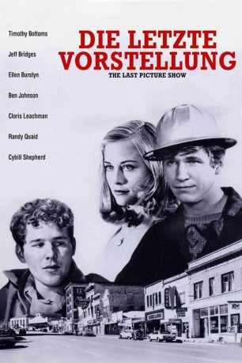
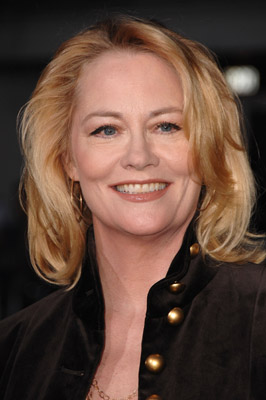
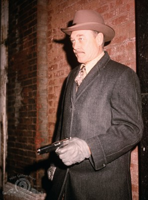
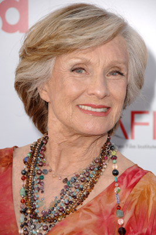
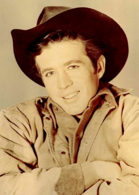
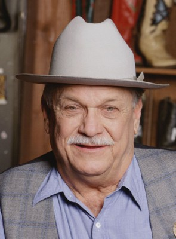

#7539 Die Letzte Vorstellung
Alternativ: The Last Picture Show
Auszeichnungen: 2 Oscars gewonnen für 6 Oscars nominiert 1 GoldenGlobes gewonnen 3 BAFTA-Awards gewonnen
 
 IMDB-Wertung: 8.1 / 10
IMDB-Wertung: 8.1 / 10  Metascore: 0
Metascore: 0 
In der kleinen Stadt Anarene in Texas ist in der Zeit nach dem zweiten Weltkrieg nicht mehr viel zu holen. Die Leute verlassen die Stadt auf der Suche nach einem besseren Leben. Auch für die älteren Teenager Sonny und Duane besteht das Leben nur aus Pendelei zwischen den Mädchen der Schule und dem alten Kino, das ihr Freund Sam, der Löwe führt. Beide wissen nicht, was sie zukünftig machen werden, wenn sie mit der Schule fertig sind. Doch als Sam stirbt und das Kino schließen muß, ist auch den beiden bald bewußt, daß neue Zeiten anbrechen. Sie versammeln sich vor Ort zur letzten Vorstellung: Red River von John Ford...
Jahr: 1971
Dauer: 126 Minuten
FSK: 16
Land: USA Studio: Columbia PicturesTonspuren:
Untertitel: Deutsch,
Auflösung: 1080p (1920x1040) Größe: 8960 MB
Genre: Drama
Regisseur:  Peter Bogdanovich
Peter Bogdanovich
Drehbuch: Larry McMurtry
Soundtrack:
Darsteller:
- Timothy Bottoms als Sonny Crawford
 Jeff Bridges als Duane Jackson
Jeff Bridges als Duane Jackson-  Cybill Shepherd als Jacy Farrow
-  Ben Johnson als Sam the Lion
-  Cloris Leachman als Ruth Popper
 Ellen Burstyn als Lois Farrow
Ellen Burstyn als Lois Farrow Eileen Brennan als Genevieve
Eileen Brennan als Genevieve-  Clu Gulager als Abilene
 Sam Bottoms als Billy
Sam Bottoms als Billy- Sharon Ullrick als Charlene Duggs
 Randy Quaid als Lester Marlow
Randy Quaid als Lester Marlow Bill Thurman als Coach Popper
Bill Thurman als Coach Popper Loyd Catlett als Leroy
Loyd Catlett als Leroy John Hillerman als Teacher
John Hillerman als Teacher-  Noble Willingham als Chester
- Frank Marshall als Tommy Logan
- The Leon Miller Band als The Leon Miller Band
- Joe Heathcock als the Sheriff
- Barc Doyle als Joe Bob Blanton
- Jessie Lee Fulton als Miss Mosey
- Gary Brockette als Bobby Sheen
- Helena Humann als Jimmie Sue
- Robert Glenn als Gene Farrow
- Janice E. O'Malley als Mrs. Clarg
- Floyd Mahaney als Oklahoma Patrolman
- Kimberly Hyde als Annie Annie Martin
- Marjorie Jay als Winnie Snips
- Joye Hash als Mrs. Jackson
- Pamela Keller als Jackie Lee French
- Gordon Hurst als Monroe
- Mike Hosford als Johnny
- Faye Jordan als Nurse
- Charles Seybert als Andy Fanner
- Grover Lewis als Mr. Crawford
- Rebecca Ulrick als Marlene
- Merrill Shepherd als Agnes
- Buddy Wood als Bud
- Kenny Wood als Ken
- Leon Brown als Cowboy in Cafe
- Bobby McGriff als Truck Driver
- Jack Mueller als Oil Pumper
- Robert Arnold als Brother Blanton
- Tom Martin als Larry
- Otis Elmore als 1st Mechanic
- Charles Salmon als Roughneck Driver
- George Gaulden als Cowboy
- Will Morris Hannis als Gas Station Man
Datei: X:\1971\Letzte Vorstellung, Die (1971, FSK16, 1920x1040).mkv seit 20.11.2017
Festplatte: HD 1971-1979
 Es gibt insgesamt 28 Filme in der Gruppe '1971'
Es gibt insgesamt 28 Filme in der Gruppe '1971'